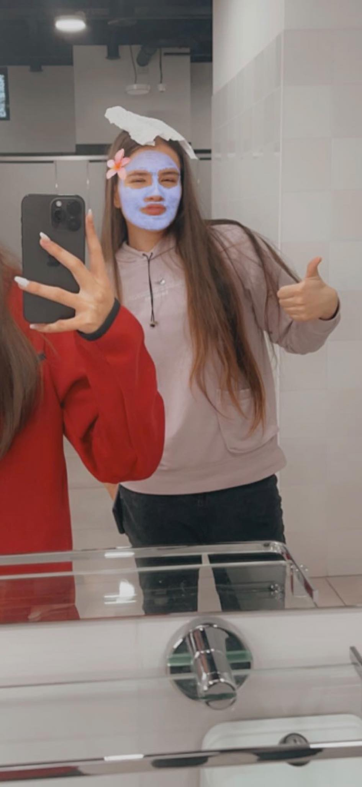
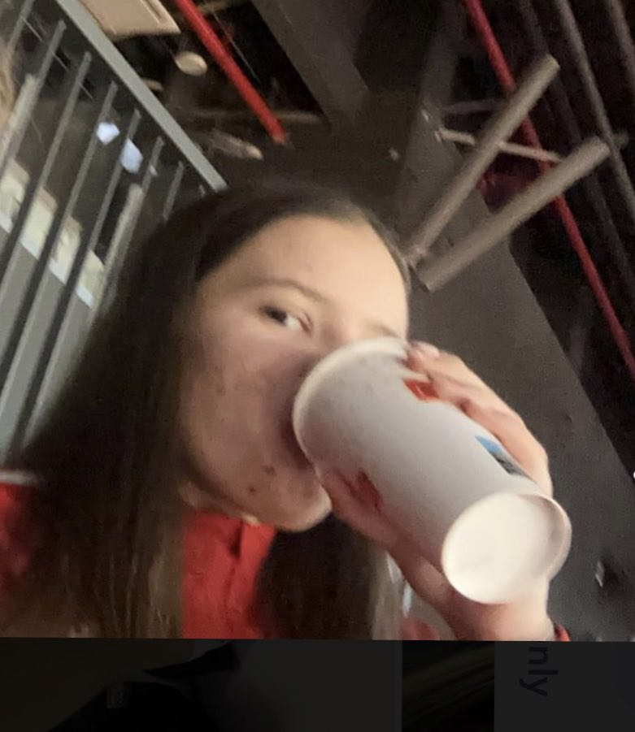

Tudnivalók

Született: 2008. június 11. , Miskolc, Magyarország
Magasság: 1,76 m
Állampolgárság: Magyar
Sport: kosárlabda
Háziállat(ok)
Tények

- Szeret enni
- kedvenc színe a rózsaszín
- Nincs kedvenc kajája csak lényeg, hogy ne legyen benne paprika
- Nem szeret egyedül lenni
- Van egy öccse aki "nem normális"
- Kedvenc film: nincs kedvenc, mikor mihez van kedve